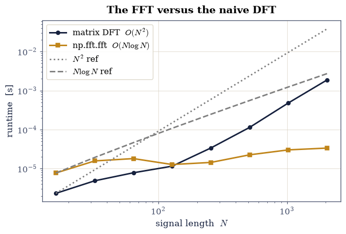
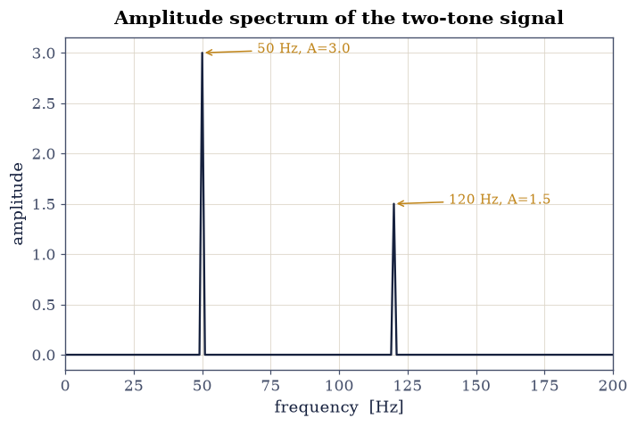
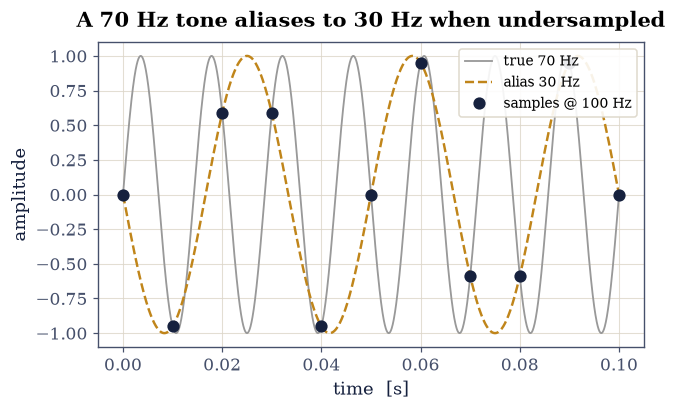
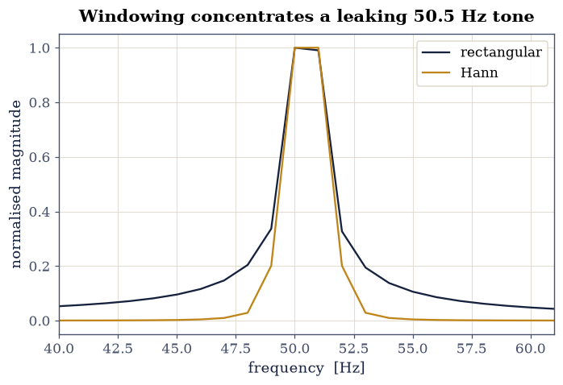
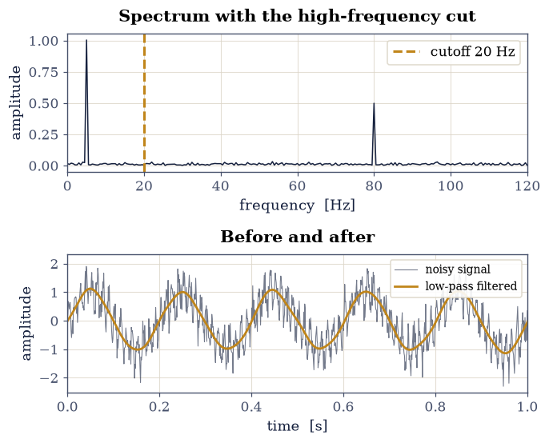
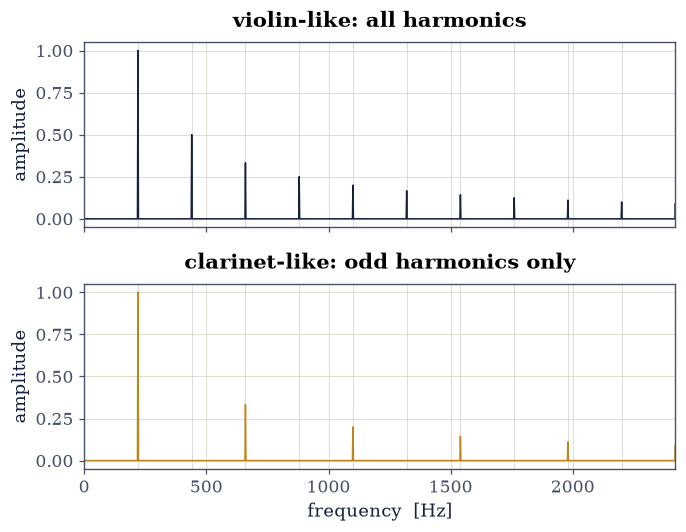
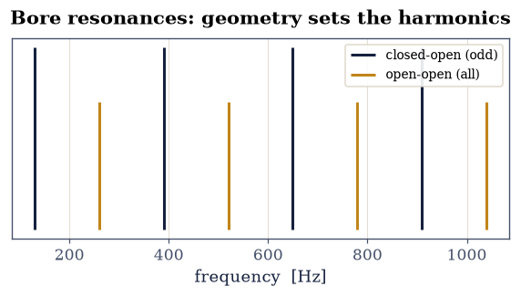

0.6 The Fast Fourier Transform#
Notebook overview#
The Fourier transform we met in analysis as an integral over all time; a computer, with only a finite list of samples, uses its discrete cousin, the discrete Fourier transform (DFT). The DFT is nothing more exotic than a change of basis (rewriting a signal as a sum of pure complex exponentials), but computing it naively costs \(O(N^2)\), and the fast Fourier transform (FFT) brings that down to \(O(N\log N)\), a speed-up so consequential it reshaped twentieth-century science and engineering. This notebook builds the DFT from scratch, shows analysis and synthesis are an exact inverse pair, explains why the FFT is fast, and then puts the transform to work: reading frequencies and amplitudes off a spectrum, the sampling theorem and aliasing, spectral leakage and windowing, and filtering by the convolution theorem.
The payoff is acoustic. The FFT of a sound’s pressure waveform lays bare its harmonic spectrum, and the relative amplitudes of the overtones are what the ear hears as timbre: why a violin and a clarinet playing the same note are instantly distinguishable. We will synthesize idealised string- and clarinet-like tones and read their spectra, then connect the spectrum to the instrument’s geometry: a closed-open tube resonates at odd multiples of \(c/4L\), the hollow signature of the clarinet. (These are honest idealisations, not recordings: real instruments add formants, transients, and conical-bore effects, a caveat we keep in view.)
Everything here is a spectrum or a waveform: a still plot tells the whole story, so there are no animations (a spectrogram of evolving timbre would be the place for one, in a later applied notebook).
How to read the checks. Each exercise ends with a
validatecall against an independent fact: the hand-built DFT versusnp.fft.fft, a known alias frequency, a resonance formula. A ✓ is strong evidence; a ✗ is a prompt to locate the discrepancy, not a verdict.
Theory in brief#
From Fourier series to the DFT#
A periodic signal is a sum of harmonics: that is the Fourier series we know. Sampling such a signal at \(N\) equally spaced points and asking for the discrete analogue gives the discrete Fourier transform: from samples \(x_0,\dots, x_{N-1}\) it produces
Each \(X_k\) is the overlap of the signal with one complex exponential of frequency index \(k\), so the DFT is a change of basis; in matrix form \(\mathbf X = F\mathbf x\) with \(F_{kn}=e^{-2\pi i kn/N}\) the DFT matrix.
The inverse, and the analysis/synthesis duality#
The transform is exactly invertible: the inverse DFT rebuilds the signal,
so the forward transform is analysis (signal → its frequency content) and the inverse is synthesis (frequency content → signal), and \(\mathrm{ifft}\circ \mathrm{fft}\) is the identity. (The one-line proof is the orthogonality of the complex exponentials over the \(N\) samples.) This duality is the conceptual heart, and it is what makes filtering possible: edit the spectrum, then synthesize back.
Why “fast”: the FFT#
Computed as written, Eq. 37 is a matrix–vector product, \(O(N^2)\). The Cooley–Tukey FFT instead splits the sum into its even- and odd-indexed terms, each of which is itself a DFT of length \(N/2\) that shares the same exponential “twiddle” factors:
where \(E_k,O_k\) are the half-length DFTs of the even and odd samples. Recursing this split costs \(O(N\log N)\): the saving is reusing the shared twiddle factors rather than recomputing every \(e^{-2\pi i kn/N}\).
Bins, resolution, sampling, and leakage#
With sampling rate \(f_s\) and \(N\) samples, bin \(k\) sits at frequency \(k f_s/N\), so
the resolution is \(\Delta f = f_s/N\) (this is what rfftfreq returns; real
signals use rfft, which keeps only the non-redundant half by Hermitian
symmetry). Sampling has a hard limit, the sampling theorem:
a frequency above \(f_s/2\) is indistinguishable from (it aliases to) a lower one (Press et al., Numerical Recipes, §12.1, state the theorem and its proof idea; Exercise 5 demonstrates the folding directly). Separately, analysing a finite stretch of a tone whose period does not fit a whole number of times into the window smears its energy across neighbouring bins, spectral leakage, which window functions (Hann, Hamming) suppress by tapering the window’s edges.
The convolution theorem, and Parseval#
Filtering rests on the convolution theorem: convolution in time is plain multiplication in frequency,
so to low-pass a signal one multiplies its spectrum by a mask and transforms back. (Substituting Eq. 37 into the convolution sum proves it in a few lines; Press et al., Numerical Recipes, §13.1, carry it out and build fast convolution on it.) Finally, energy is the same whether counted in time or frequency, because the change of basis is unitary up to the \(1/N\) convention: Parseval’s theorem:
Setup#
Imports only — this notebook’s Setup defines no functions and no constants.
It holds NumPy and Matplotlib, the time module used in Exercise 3 to clock
the \(O(N^2)\) transform against the \(O(N\log N)\) one, and the course’s
validate helper. Everything the notebook is about — the DFT matrix and
the matrix-product transform, the recursive radix-2 FFT, the leakage metric,
and the amplitude readers behind filtering and timbre — you build in the
exercise where it is earned.
The Setup below holds this notebook’s data and instruments — nothing you are asked to build. It is collapsed so the building stays yours; expand it whenever you want the details.
Exercise 1 — The DFT from scratch#
The cleanest way to meet the DFT is to build its matrix and multiply. The DFT matrix has entries \(F_{kn}=e^{-2\pi i kn/N}\), so \(\mathbf X=F\mathbf x\) is exactly Eq. 37. We test it on two explicit length-8 signals: the unit impulse \(\mathbf x=[1,0,0,0,0,0,0,0]\), whose transform is a flat spectrum (every \(X_k=1\), since the impulse contains every frequency equally), and the pure tone \(x_n=\cos(2\pi\cdot 2n/8)\), whose energy should land entirely in bins \(k=2\) and \(k=6\).
Build the DFT matrix and the matrix-product transform (the
dft_matrixanddft_naivehelpers below,numpy.outerfor the exponent grid).Transform the impulse and confirm the flat spectrum.
Transform the tone, confirm the energy sits in bins 2 and 6, and check both results against
numpy.fft.fft.
DFT of the impulse = [1. 1. 1. 1. 1. 1. 1. 1.]
DFT of cos(2π·2n/8) = [-0. -0. 4. 0. 0. 0. 4. 0.]
Validation 1#
✓ the hand-built DFT matches np.fft.fft on the impulse [max|Δ| = 0 (rtol=1e-06, atol=1e-10)]
✓ the hand-built DFT matches np.fft.fft on cos(2π·2n/8) [max|Δ| = 2.45392e-15 (rtol=1e-06, atol=1e-10)]
True
Exercise 2 — The inverse transform and the analysis/synthesis duality#
Because the DFT is just a change of basis, it undoes exactly, via the inverse DFT, Eq. 38. Taking the impulse signal \(\mathbf x=[1,0,0,0,0,0,0,0]\) of Exercise 1:
Transform it (
numpy.fft.fft) and transform back (numpy.fft.ifft), confirming the round trip returns the original to machine precision.Read each \(X_k\) as the complex amplitude of one exponential: analysis followed by synthesis is the identity, and summing those exponentials is the signal.
max round-trip error = 0.0
Validation 2#
✓ ifft∘fft round-trips exactly [max|Δ| = 0 (rtol=1e-06, atol=1e-12)]
True
Exercise 3 — Why “fast”: O(N log N)#
The FFT’s speed comes from the even/odd split of Eq. 39, which can be written as a short recursion (radix-2, for power-of-two \(N\)): the samples separate into even- and odd-indexed halves, each half is transformed, and the two recombine with the twiddle factors \(e^{-2\pi i k/N}\).
Write the recursion (the
radix2_ffthelper) and check it againstnumpy.fft.ffton the impulse of Exercise 1.Time
numpy.fft.fftagainst the \(O(N^2)\) matrix DFT of Exercise 1 across \(N=2^4,\dots,2^{11}\) (time.perf_counter, averaged over repeats).Watch the two scalings part ways against \(N^2\) and \(N\log N\) reference lines (Fig. 37).
radix-2 FFT matches numpy: True

Fig. 37 Runtime of np.fft.fft versus the \(O(N^2)\) matrix DFT \(F\mathbf x\) (the rule of Exercise 1) on random real signals of length \(N=2^4,\dots,2^{11}\), log–log. The FFT (amber) tracks the \(N\log N\) reference slope while the naive matrix product (dark) tracks \(N^2\); the gap is the Cooley–Tukey saving from reusing shared twiddle factors.#
Validation 3#
✓ the recursive radix-2 FFT matches numpy [max|Δ| = 0 (rtol=1e-06, atol=1e-10)]
True
Exercise 4 — Reading a spectrum: frequencies and amplitudes#
With the transform in hand, the everyday task is to read a real measurement. The explicit two-tone signal here is
sampled at \(f_s=1000\) Hz for \(T=1\) s (so \(N=1000\) samples, resolution \(\Delta f = f_s/N = 1\) Hz).
Transform with
numpy.fft.rfftand get the frequency axis fromnumpy.fft.rfftfreq(the right pair for a real signal).Locate the two peaks.
Recover their amplitudes as \(2|X_k|/N\) (the single-sided amplitude of a sine). Both frequencies (50 and 120 Hz) and amplitudes (3 and 1.5) should come back exactly, because each tone sits on an integer bin (Fig. 38).
peaks at [ 50. 120.] Hz with amplitudes [3. 1.5]

Fig. 38 Single-sided amplitude spectrum of \(x(t)=3\sin(2\pi\cdot 50\,t)+1.5\sin(2\pi\cdot 120\,t)\) sampled at \(f_s=1000\) Hz for \(1\) s: two clean lines at 50 Hz (amplitude 3) and 120 Hz (amplitude 1.5), recovered exactly because each tone lands on an integer frequency bin (\(\Delta f=1\) Hz). The amplitude is read as \(2|X_k|/N\).#
Validation 4#
✓ the two tones appear at 50 and 120 Hz [max|Δ| = 0 (rtol=1e-06, atol=1)]
✓ the peak amplitudes are recovered [max|Δ| = 8.88178e-16 (rtol=0.01, atol=1e-09)]
True
Exercise 5 — Aliasing and the sampling theorem#
The sampling theorem, Eq. 40, sets a hard ceiling: sampled at \(f_s\), a signal is faithful only below \(f_s/2\), and anything higher folds down to a lower frequency. The explicit tone below is \(x(t)=\sin(2\pi\cdot 70\,t)\), and at a sampling rate of \(f_s=100\) Hz the Nyquist limit is only 50 Hz: the 70 Hz tone exceeds it and aliases to \(|70-100|=30\) Hz.
Sample the tone at \(f_s=100\) Hz and locate the spectral peak: it masquerades as a 30 Hz tone, indistinguishable from the real thing in the samples (Fig. 39).
Sample the same tone at \(f_s=1000\) Hz (Nyquist 500 Hz) and confirm it is recorded correctly at 70 Hz.
70 Hz tone sampled at 100 Hz appears at 30.0 Hz
70 Hz tone sampled at 1000 Hz appears at 70.0 Hz (correct)

Fig. 39 Aliasing of \(x(t)=\sin(2\pi\cdot 70\,t)\) sampled at \(f_s=100\) Hz (Nyquist 50 Hz): the samples (dark dots) lie on the true 70 Hz sinusoid (grey) but are equally consistent with a 30 Hz sinusoid (amber) — the alias \(|70-100|=30\) Hz. Below the Nyquist limit the two are indistinguishable, so the undersampled tone masquerades as 30 Hz.#
Validation 5#
✓ a 70 Hz tone sampled at 100 Hz aliases to 30 Hz [got 30 vs expected 30 (rtol=1e-06, atol=1)]
True
Exercise 6 — Spectral leakage and windowing#
A subtler artefact appears when a tone’s period does not fit a whole number of times into the analysis window. The explicit tone below is \(x(t)=\sin(2\pi\cdot 50.5\,t)\), sampled at \(f_s=1000\) Hz for \(T=1\) s: at 50.5 Hz the signal completes \(50.5\) periods in the window, falling between the 50 and 51 Hz bins, so its energy smears across many bins: spectral leakage. Multiplying the signal by a Hann window (a smooth taper to zero at both ends) concentrates the energy back into the main lobe (Fig. 40).
Build the tone and quantify its leakage: the fraction of spectral energy lying outside the two bins nearest 50.5 Hz (the
leakagehelper).Apply a Hann window (
numpy.hanning) and recompute.Confirm the window reduces the leakage, at the cost of a slightly wider peak.
leakage (rectangular window) = 0.189
leakage (Hann window) = 0.040

Fig. 40 Spectral leakage of \(x(t)=\sin(2\pi\cdot 50.5\,t)\) (\(f_s=1000\) Hz, \(1\) s), whose 50.5 Hz falls between bins. With a rectangular window (dark) the energy smears across many bins; the Hann taper (amber) concentrates it into a clean main lobe at the cost of a slightly wider peak. Spectra are normalised to their peak.#
Validation 6#
✓ the Hann window reduces spectral leakage [leakage Hann 0.040 < rect 0.189]
True
Exercise 7 — Filtering via the transform (convolution theorem)#
The convolution theorem, Eq. 41, makes filtering a one-liner in frequency space: rather than convolving in time, one edits the spectrum and transforms back. The explicit noisy signal below is
with \(f_s=1000\) Hz, \(T=2\) s, and noise \(\eta\) drawn from
numpy.random.default_rng(0).standard_normal (one sample per time point). The
wanted signal is the 5 Hz tone; the 80 Hz tone and the broadband noise are not.
Transform with
numpy.fft.rfftand zero every bin above a \(20\) Hz cutoff.Inverse-transform with
numpy.fft.irfft.Confirm the 80 Hz component (and most of the noise) has vanished (Fig. 41).
amplitude at 80 Hz: before 0.499, after 1.372e-17

Fig. 41 Low-pass filtering of \(x(t)=\sin(2\pi\cdot5\,t)+0.5\sin(2\pi\cdot80\,t)+0.3\eta(t)\) (seed 0, \(f_s=1000\) Hz) by the convolution theorem: zeroing every spectral bin above the 20 Hz cutoff (dashed line, top) and inverse-transforming turns the noisy waveform (dark, bottom) into the clean 5 Hz tone (amber), removing the 80 Hz component and the broadband noise.#
Validation 7#
✓ zeroing high-frequency bins and inverse-transforming removes the 80 Hz tone [80 Hz amplitude 0.499 → 1.37e-17]
True
Exercise 8 — Timbre: the harmonic spectrum of a note#
Now the acoustics. Two instruments playing the same pitch sound different because their overtones have different relative amplitudes: that is timbre, and the FFT reads it directly. The two explicit half-second notes below sit at the same pitch \(f_0=220\) Hz (A3), sampled at \(f_s=44100\) Hz: a string/violin-like tone with all harmonics,
and a clarinet-like tone with only the odd harmonics,
Synthesize both tones.
Compute their spectra (
numpy.fft.rfft) and read off the harmonic amplitudes.Confirm the signature difference: the clarinet’s even harmonics are absent while the violin’s are all present (Fig. 42).
These are deliberate idealisations (real notes carry formants, transients, and bore-shape effects; a saxophone’s conical bore sounds a full harmonic series despite being closed-open), but the odd-versus-all contrast is the essential lesson.
clarinet even-harmonic amplitudes (2,4,6,8 f₀) = [6.38307045e-18 4.06204221e-16 4.03911155e-16 1.92416798e-16]
violin even-harmonic amplitudes (2,4,6,8 f₀) = [0.5 0.25 0.167 0.125]

Fig. 42 Harmonic spectra of two idealised half-second notes at \(f_0=220\) Hz (\(f_s=44100\) Hz): a violin-like tone \(\sum_{n=1}^{19}\tfrac1n\sin(2\pi n f_0 t)\) with all harmonics (top) and a clarinet-like tone with only odd harmonics (bottom). The clarinet’s missing even harmonics are the spectral signature of its hollow timbre; amplitudes fall as \(1/n\).#
Validation 8#
✓ the clarinet-like tone has only odd harmonics; the violin-like tone has all of them [clarinet even max 4.1e-16, violin even min 0.125]
True
Exercise 9 — Acoustic resonances of a bore (student exercise)#
Where do those harmonics come from? An instrument sounds the frequencies its air column resonates at, and the geometry fixes them. For a closed-open cylindrical tube (closed at the mouthpiece, open at the bell, the clarinet’s idealisation) of length \(L=0.66\) m with sound speed \(c=343\) m/s, the resonances are the odd multiples
which is exactly why the clarinet’s spectrum in Exercise 8 had only odd harmonics.
Compute the first four resonances and relate them to that FFT spectrum.
Contrast with an open-open tube (a flute-like idealisation), whose resonances \(f_n = n\,c/2L\) form the full harmonic series.
Connect the two: the bore’s resonance peaks select which harmonics the instrument can sound — the bridge from geometry to timbre.
There is no animation here; this is a resonance calculation. (A personal aside: I have always found it striking that one can hear the difference between a clarinet and a flute and that the reason is, at bottom, one boundary condition (open versus closed) turned into a factor of two.)
closed-open (clarinet-like): [129.9 389.8 649.6 909.5] Hz
open-open (flute-like): [ 259.8 519.7 779.5 1039.4] Hz

Fig. 43 Resonance frequencies of two ideal cylindrical tubes of length \(L=0.66\) m (\(c=343\) m/s): a closed-open tube (dark) resonates at the odd multiples \((2n-1)c/4L\) (129.9, 389.8, 649.6, 909.5 Hz), an open-open tube (amber) at the full series \(n\,c/2L\). The closed-open comb is the clarinet’s odd-harmonic signature seen in the timbre spectra above.#
Validation 9#
✓ closed-open tube resonances are odd multiples of c/4L [max|Δ| = 0 (rtol=1e-06, atol=1e-09)]
True
Exercise 10 — Power spectrum and Parseval’s theorem#
A useful consistency check closes the loop: energy is conserved between the time and frequency domains, Parseval’s theorem of Eq. 42.
For the two-tone signal of Exercise 4 (\(f_s=1000\) Hz, \(1\) s), compute the time-domain energy \(\sum_n |x_n|^2\) and the frequency-domain energy \(\tfrac1N\sum_k |X_k|^2\) (
numpy.fft.fft).Confirm they agree to rounding.
time-domain energy = 5625.000000
frequency-domain energy = 5625.000000
Validation 10#
✓ Parseval: energy is conserved between time and frequency domains [got 5625 vs expected 5625 (rtol=1e-10, atol=1e-09)]
True
Notebook summary#
The DFT from scratch and its analysis/synthesis duality, then the \(O(N\log N)\) FFT; reading a spectrum’s frequencies and amplitudes; aliasing and the sampling theorem; spectral leakage and windowing.
The convolution theorem for filtering; the harmonic spectrum behind timbre; acoustic bore resonances; and Parseval’s theorem tying the power spectrum to the signal energy.
Outlook#
The 2-D FFT filters and compresses images, the spectral cousin of the SVD compression of §0.5: both discard small coefficients.
Spectral differentiation computes a derivative by multiplying by \(ik\) in frequency space, the seed of spectral methods for PDEs.
The short-time Fourier transform (spectrogram) tracks how timbre evolves (a vibrato, a note’s attack) and is the natural place for a genuine animation in a later applied notebook.
In physics, the FFT computes structure factors and diffraction patterns, correlation functions, and the spectral solution of field equations.
References#
Neville H. Fletcher and Thomas D. Rossing. The Physics of Musical Instruments. Springer, 2 edition, 1998.
William H. Press, Saul A. Teukolsky, William T. Vetterling, and Brian P. Flannery. Numerical Recipes: The Art of Scientific Computing. Cambridge University Press, 3 edition, 2007.